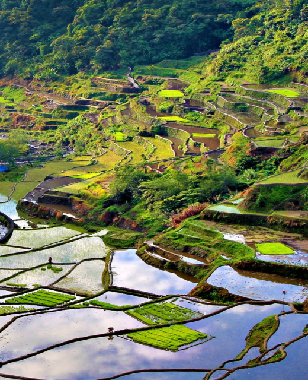
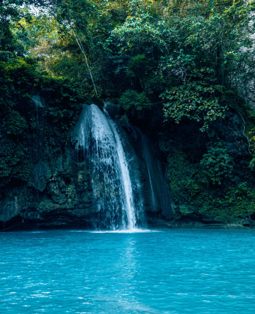
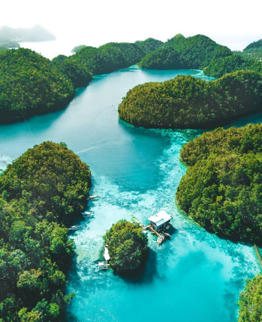

BINI-
bilog
Home
About Us
Welcome
History Webiste
Celebrating our rich heritage and empowering future generations through knowledge.
Places In Philippines

Luzon, largest and most important island of the Philippines. It is the site of Manila, the nation's capital and major metropolis, and of Quezon City. Located on the northern part of the Philippine archipelago, it is bounded by the Philippine Sea (east), Sibuyan Sea (south), and the South China Sea (west).
Luzon

Visayas region is located in central Philippines, with a total land area of 71,503 km2 (27,607 sq mi). It consists of several islands, including Samar, Negros, Panay, Leyte, Cebu, Bohol, Guimaras, Biliran, Siquijor, Panaon and Bantayan.
Visayas

Mindanao, island, the second largest (after Luzon) in the Philippines, in the southern part of the archipelago, surrounded by the Bohol, Philippine, Celebes, and Sulu seas. Irregularly shaped, it measures 293 miles (471 km) north to south and 324 miles (521 km) east to west.
Mindanao